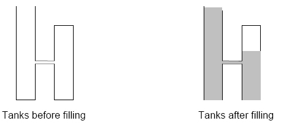

World Finals - Tokyo - 2006/2007
| 3810 - Problem: Water Tanks World Finals - Tokyo - 2006/2007 | ||||
| Submit | Ranking | ||||
The Aqua Container Management company manages water storage facilities. They are considering a system of storing water in a series of connected vertical tanks. Each tank has a horizontal cross-sectional area of one square meter, but the tanks have different heights. The base of each tank is at ground level. Each tank is connected by a pipe to the previous tank in the series and by another pipe to the next tank in the series. The pipes connecting the tanks are level and are at increasing heights (that is, the pipe connecting tank i
The series of tanks is filled by pouring water slowly into the top of tank 1, continuing until the water level reaches the top of tank 1. As the water level rises above the connecting pipes, water flows among the tanks.
Aqua Container Management needs a program to compute the cubic meters of water that can be poured into the series of tanks before the water level reaches the top of tank 1.
The figure below illustrates a simple case involving only two tanks. After the filling procedure is completed, the air in the upper part of the second tank is compressed (its air pressure is greater than one atmosphere), so the water level in the second tank is lower than the water level in the first tank.
The following physical principles are helpful in solving this problem (some of these are approximations that are acceptable for the purposes of this problem):
The input consists of several test cases representing different series of water tanks. Each test case has three lines of data. The first line contains an integer N
The last test case is followed by a line containing the integer zero.
For each test case, print a line containing the test case number (beginning with 1) followed by the amount of water, in cubic meters, that can be poured into tank 1 before the water level reaches the top of tank 1. Print the results with three digits to the right of the decimal point.
Print a blank line after the output for each test case. Use the format of the sample output.
Tests-Setter: Derek Kisman

Input
 N
N 10)
10)
Output
Sample Input
2
10.0 8.0
4.0
0
Sample Output
Case 1: 15.260
Tokyo 2006-2007